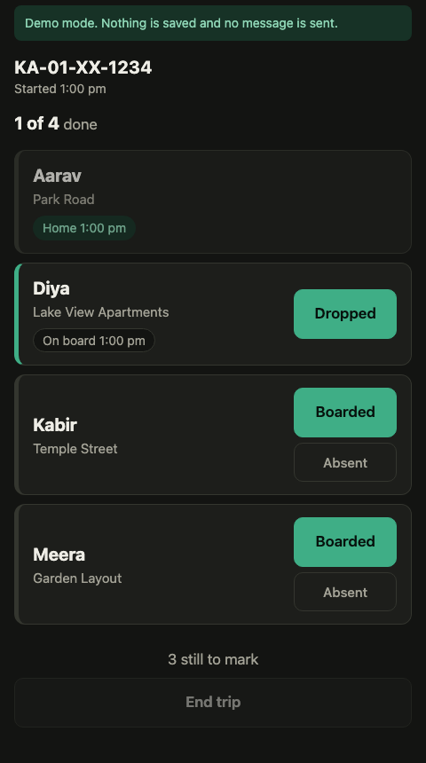

Piloting on one van in Bangalore
A message when your child is home.
TapSafe tells a parent on Telegram when their child gets on the school van and when they reach home. The driver taps once per child. That is all the driver has to do.

How a trip works
-
Child gets on
The driver starts the trip and taps the child's name.
-
Parent is told
A Telegram message reaches the parent right away.
-
Child reaches home
At the stop the driver taps again, and the parent gets a second message.
If a child has been on board for an hour without being dropped, the parent and the driver both get a reminder.
What a parent sees
Two short messages for each trip. Nothing to open, nothing to log in to. Parents only need Telegram.
Example messages. The name and the van number are made up.
Rahul boarded KA-01-XX-1234
Rahul reached home
Why taps and not GPS
Many school bus apps track the vehicle with GPS and are sold to schools. A lot of families use a private van that no school manages.
TapSafe runs on the driver's own Android phone, needs no hardware, and does not need the school to be involved.
It also works on a weak connection. Taps are saved on the phone and sent when the network comes back.
What it does not do
- It does not show a live map.
- It covers the afternoon trip only, from school to home.
- Alerts go to the parent and the driver, and to nobody else.
- The driver's app never shows a parent's phone number or Telegram details.
If you run a van, or your child rides one
The driver app and the alerts work. I am still learning what drivers and parents need. I would like to hear from you.